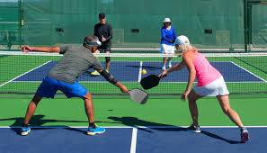

Some of My Passions and Hobbies Recently
Pickleball
 Lately, I have been playing a lot of Pickleball. Pickleball is a combination of tennis, ping pong, and badminton, all in one. I started playing ping pong when I was nine and feel like a lot of skills that I learned from that have translated over to pickleball for me. I like how pickleball gives me the opportunity to get outside more, spend time with my friends, and do something that I enjoy.
Video Games
 I've been into videogames ever since I was a little kid.
Within the last few months, the main three video games that I have cycled through have been Fortnite, Clash of Clans, and Chess.
I like switching between these three games mainly, as they give me a change of pace and different type of gameplay from game to game.
Recently, chess.com did a collaboration with Clash of Clans, and gave us a crossover between the two in-game.
I thought that this was pretty neat, considering that I have been playing both quite a bit lately.
I've been into videogames ever since I was a little kid.
Within the last few months, the main three video games that I have cycled through have been Fortnite, Clash of Clans, and Chess.
I like switching between these three games mainly, as they give me a change of pace and different type of gameplay from game to game.
Recently, chess.com did a collaboration with Clash of Clans, and gave us a crossover between the two in-game.
I thought that this was pretty neat, considering that I have been playing both quite a bit lately.
Watching Sports
 Sports typically are more enjoyable for me to watch this time of year, as I have multiple things tied to them, that are affected by the outcome of the games.
Specifically, I am referring to the NFL. I am doing fantasy football, a pick'em, and sometimes betting on the side, all of which rely how the games are played out.
This is the first year I have ever been in a pick'em league, and it has been fun choosing who you think will be the winner of each game, each week.
I have been doing fantasy football since I was nine, and have enjoyed keeping the tradition of me doing that every NFL season.
I enjoy sports betting overall in moderation, as it gives me the chance to bet on a variety of sports, and gives me a little more excitement when watching when it comes to games that I wouldn't have much interest in watching otherwise.
Sports typically are more enjoyable for me to watch this time of year, as I have multiple things tied to them, that are affected by the outcome of the games.
Specifically, I am referring to the NFL. I am doing fantasy football, a pick'em, and sometimes betting on the side, all of which rely how the games are played out.
This is the first year I have ever been in a pick'em league, and it has been fun choosing who you think will be the winner of each game, each week.
I have been doing fantasy football since I was nine, and have enjoyed keeping the tradition of me doing that every NFL season.
I enjoy sports betting overall in moderation, as it gives me the chance to bet on a variety of sports, and gives me a little more excitement when watching when it comes to games that I wouldn't have much interest in watching otherwise.